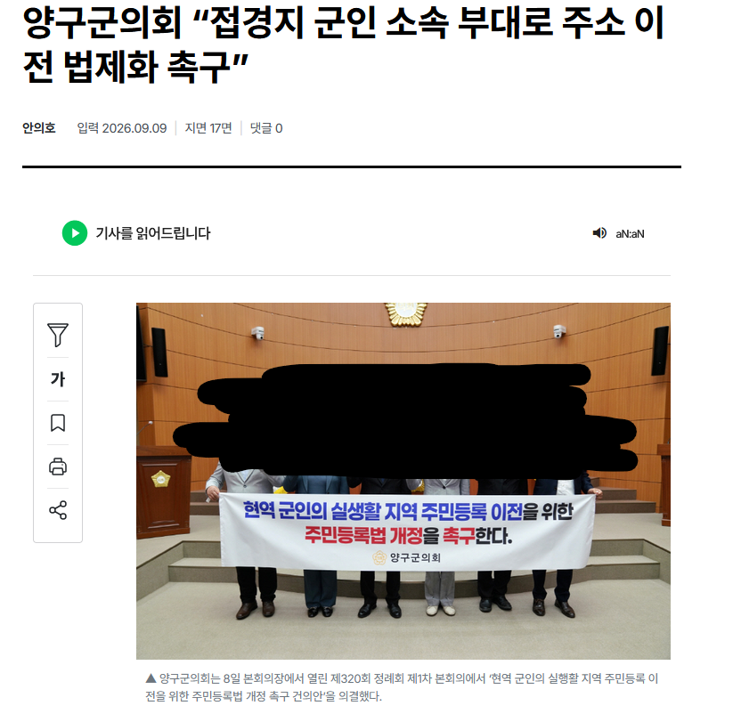

양구 군인폭행사건때의 실화를 모티브로 촬영한 최신화가 공개됨.

그리고 해당화가 공개된날.
"현역 군인들의 주소지를 양구로 이전하라아아아!!!"
양구 군인폭행사건때의 실화를 모티브로 촬영한 최신화가 공개됨.

그리고 해당화가 공개된날.
"현역 군인들의 주소지를 양구로 이전하라아아아!!!"
지선은 끝났고! 지금 군인애들은 1년반뒤에 전역하고! ㅋㅋㅋㅋㅋㅋ 아이쿠쿠 두바퀴돌아도 임기가 남네 ㅋㅋㅋ
대가리 상식이란게 없는새끼들인가 지들 당장 주머니 돈들어오는게 중요한새끼들
근데 돈은 중요하긴 해
싹다 망해야 정신차리지 븅신들이
니들이뭔데?
양구 씨발
양구??
2010년도에 피방 시간당 3000 썩은 모텔방 1박에 50만 10분거리 택시비 4-5만원 부르던 놈들임
애미 뒈진 양심없고 사람 같지도 않는 놈들임
태풍와서 대민지원 나가면 '얘들은 공짜야 ㅋㅋ' 이지랄 하면서 수해랑 상관없는 일에 부려 먹는 악질들임
난 신안이 망했단 소리보다 양구가 망했다는 소리가 더 반가울거다
1박에 50만원 ㅆㅂ ㄹㅇ임?? 애미뒤진개새끼들이네 진짜
ㄹㅇ 사람 ㅅㄲ들인가? 양심이 있고 없고 문제가 아니라 사람이 아니잖아.
???? ㄹㅇ? 말이 되나
기생충
전쟁 터져도 방어해주기 싫은 동네
보면 신안만큼 양구도 개좆같은 곳이야
어우 씨발 역겨운 짐승새끼들
지랄한다 ㅋㅋㅋㅋㅋㅋ
가면 갈수록 역겨운 동네네
양구뿐만아니라 군부대 인접한 강원도 시골들은 거의 저지랄들아닌가 서화면 천도리 ㅅㅂ ㅋㅋ 아직도기억나네
12사아니면 3군단직할포병이네
걍망해라 ㅋㅋ
병신들 군인이 고객이면 차별을 말았어야지 ㅋㅋㅋㅋ 그때 당시 병사 월급 시발 얼마된다고 동기들끼리 외박나가면 월급은 무슨 남은 사비까지 털어서 먹고 자고 놀고 했는데 ㅋㅋㅋ
좆만한 여관방에 돈 존나 깨지는게 아까웠어도 사양도 그지같은 피시방에 한시간 3천원 정도 주면서도 오랜만에 싸제 나왔다고 즐거워하는 20대 초반애들 사골까지 쪽쪽 빨아먹었으면 이제 그 대가를 치뤄야지 씹년들아 ㅋㅋ
저 동네는 씹쌔끼들만 삼?
양구 군부대 해체한거 아니었음?
2사해체 21사는 남아있을껄
지역감정 가져도 되는 곳중 하나 기생충 새끼들 모여 사는 마을
저긴 사람들이 별로니까 동네 분위기도 음침하고 별로임
내 친구가 양구 근처에 사는데 양구 새끼들은 군인 뿐만 아니라 모든사람들을 등처먹을려고 하는 10새끼들이라고 함
법은 씨발 니미, 법으로 강제하면 다 되는 줄 아나? 위헌이라는 말이 왜 있는데?
특정지역이슈는 보통 특정 모집단이 있거나 특정소수관련 사건인데반해서 저기는 인구가 2만인데 대부분 저렇다는거임
어 이현균 나오네
주소지 이전하면 정치표 때문에도
기존 협회가 개발릴텐데 저게 뭔 이득이 있는거지??
저렇게 말하는 이유가 몇 가지 있는데
지역의 인구수에 비례하여 책정되는 교부세라해서 국가 지원금 받아 먹는거랑, 인구 마지노선 붕괴로 행정조직 축소 방지, 그리고 군인들이 쓰는 지역 인프라 예를 들어 도로, 상하수도, 쓰레기 처리장 비용은 해당 지역이 지는데 군인들이 주소지 이전 안하면 중앙 정부 예산 지원이 없었나 그럴거임. 그러다보니 저러는 거
몇 개는 생각해보면 말할 수는 있다 생각이 되긴 하는데, 과거 수십 년간 군인들을 호구 취급하며 열악하게 대우했던 놈들이, 이제 와서 자신들의 예산과 생존을 위해 군인들의 인적 정보까지 법제화하여 중앙정부 지원금까지 빨아먹으려고 하는게 보여서 좋은 소리는 못 듣는 중. 직업군인 가지고 그러면 그나마 한번 참고 생각이라도 해주겠는데 주민등록법상 그러니까. 그리고 그렇게 직업군인들은 하니까. 그런데 일반 징집병까지 주소지 이전 해달라 주장 중임.
주민등록법 제12조 병역 의무를 수행하기 위해 영내에 기거하는 군인은 그가 원래 속한 세대의 거주지(본가)를 주소로 본다고 명확히 규정하는 것도 예산 탈려고 일반병도 주소지 이전하게 개정 해달라 이거임.
행정낭비, 징집병 가족 세대주 피해, 지역 기반 국가 장학금 및 청년 지원금 혜택 상실 안중에도 없는거임.
애초에 국가장학금 세대주 행정낭비신경썼으면 그렇게 무슨 불가촉천민 보듯이 보지도 않았을거임.. 진짜 심각하다
분노의 불매쳐맞고 폭행한넘들 갖다 바치지 않았나?
그래도 결국 위수지역 폐지,군부대 이전으로 망했다고 들었는데
저렇게 애들한테 투표권 주면 당장 세금 좀 먹고 그 뒤론 개털릴건데
되겠냐 ㅋ
병신들ㅋㅋㅋ 말이되는소리를 해라
양구에 오면 젋어져요 - 슬로건
애미디진 십꼴창 시골농노새끼들
이 개새끼들 정신못차렸네 ㅋㅋㅋㅋ
저런 지방은 소멸하는게 맞어
양구로 두면 양구에서 전기차보조금받을수있겠네?
너넨 소멸 좀 해라
양구군의 경우 군 장병들이 복무지역으로 주소를 이전하면 지방교부세가 100억원가량 증가할 것으로 예상했다.
거 2026 지선도 끝났고~ 다음 지선 전까지 한탕 거하게 해먹어봅시다잉~
진짜 씨이발 의도가 너무투명해서 말이안나오네
주소지이전 2029,30년에 하면 인정한다